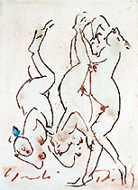

|
Gundi Dietz
Austrian ceramist

Austrian
ceramist Gundi Dietz
has become known for her figurative porcelain sculpture, mainly
of the female figure. Each work is a sensitive character study.
Dietz studied ceramics and sculpture under Professor Leinfellner
at the University of Applied Art in Vienna from 1965–70. She
has also worked with the Viennese Porcelain Manufactory in Augarten.
She has won several prizes, including an ‘Honorary Silver
Needle’, awarded by the Province of Lower Austria and in 2001
was awarded the title ‘Professor’, by the Office of
the Chancellor of Austria. She has been a member of the International
Academy of Ceramics since 1993.
Few artists succeed in achieving an unmistakably independent style
in figurative porcelain. Dietz has succeeded in developing such
a style, in the process establishing her own making techniques.
Zillie
Her technical skills point towards her preference for the material
porcelain, with which she creates her unique figures - standing,
lying or sitting up. Her work revolves around the female figure
in her most natural form - naked, or semi-naked - but never seductive,
rather natural and humorous. Dietz also makes animal
figures and has been involved in public
commissions.

Artist's Statement
Zillie is a spiritual vessel. A discourse with
beauty and life's misunderstandings. I had a vision of a simple
sculptural form. Strong and energetic. She was looking at her thoughts
running through her fingers. While building and assembling her,
my vision intensified, the picture in the mind's eye took form.
From the variety of my ideas, the sculpture was reduced
to its essence. This reduction of form, motion and color is central
to my work. Zillie is in various stages of transition, of
peeling and shedding skin, smoothing, tearing, all became central.
She showed me, where she wanted to go.
During this process of development, iIt takes semsibility
to hone in on the inner picture. The material is seductive
and technical problems loom large. I have to go into a meditatative
and concentrated state to stop my visions from running amok. After
the inner struggle, I am in agreement with my creation, which I
have brought to life via various processes. Now I can be amazed
at these immortal beings that move us. This is a wonderful process.
The studio is as if a crime scene. Again and again,
I am drawn there, right into the work. Add to that the natural rythym,
dictated by the nature of the living, breathing material - porcelain.
I can't just leave work sitting there, once started. Here is a concentrated
energy that has to be brought to its conclusion.
With Zillie, this process took several weeks.
It was an exciting and happy time. Zillie was an instant
success. She was pliable, she adapted to my needs. It is always
a challenge to find the right balance between sensitive and strong,
light and dark, soft and hard, smooth and rough. One little slip
while incising a line and the balance may be lost.
She is like a soul map you can read, but leaves
plenty to the imagination. She is authentic. I love her.
More Featured Artists
More Articles
|
{kind=link}
{kind=link}
{kind=link}
{kind=link}
{kind=link}
{kind=link}
{kind=link}
{kind=link}
{kind=link}